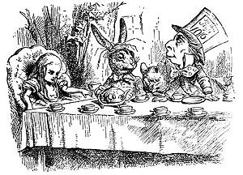
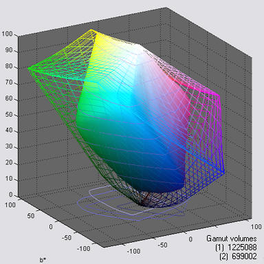
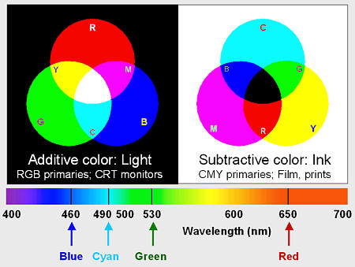
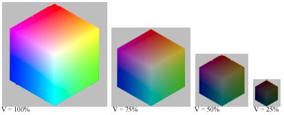
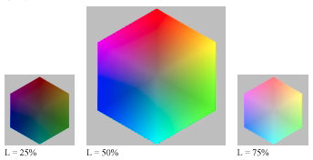
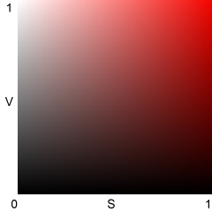
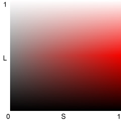

This page contains algorithms and reference formulas used in Gamutvision™. The green text is heavily mathematical.
Several Gamutvision displays use color difference metrics to quantify the perceptual difference between colors. All of these metrics are based on L*a*b* color space, which was designed to be perceptually uniform. If it were truly uniform, perceptual color differences could be determined by the Euclidian distance between colors expressed as L*a*b* values:
ΔE*ab = ( (L*2-L*1)2 + (a*2-a*1)2 + (b*2-b*1)2 )1/2 = (ΔL*2 + Δa*2 + Δb*2 )1/2
We are often interested in differences between color only, omitting luminance.
ΔC*ab = ((a*2-a*1)2 + (b*2-b*1)2 )1/2 = (Δa*2 + Δb*2 )1/2
However, L*a*b* (sometimes referred to as CIE 1976) is not nearly as uniform as its designers intended. In particular, the eye is a good deal less sensitive to differences in chroma (c* = (a*2 + b*2 )1/2 ; i.e., intensity of color) for strongly chromatic colors than it is to hues (hue angle = h* = arctan(b/a) ). To correct this deficiency several color metric formulas have been proposed.
We are not able to recommend one over the other at this time. Both are more accurate than CIE 1976, but both are less familiar to photographers. They give very different numbers, so it's important to be consistent and always specify which measurement you are using.
The Hue and Chroma differences, ΔH* and ΔC*, are of interest for their own sake and because they are used in the CIE 1994 and CMC color difference formulas, below.
ΔH* = ( (ΔE*ab )2 - (ΔL*)2 - (ΔC*)2 )1/2 (Hue difference ; DCIH (5.36) )
Δc* = ( a1*2 + b1*2 )1/2 – ( a2*2 + b2*2 )1/2 (Chroma difference)
Δh* = 180/π (arctan( b1* / a1*) – arctan( b2* / a2*) ) (Hue angle difference ; see online Errata )
Δh* = Δh* - 360 if Δh* > 200 ; Δh* = Δh* + 360 if Δh* < -200
Δh* = 0 where the hue angle is poorly defined: L* < 2 ; max(a1 , b1*) < 2 ; max(a2 , b2*) < 2 ;
Now for the math...
The notation in this section is adapted from the Digital Color Imaging Handbook, edited by Gaurav Sharma, published by the CRC Press, referred to below as DCIH. The DCIH online Errata was consulted.
CIE 1976
The L*a*b* color space was designed to be relatively perceptually uniform. That means that perceptible color difference is approximately equal to the Euclidean distance between L*a*b* values. For colors {L1*, a1*, b1*} and {L2*, a2*, b2*}, where ΔL* = L2* - L1*, Δa* = a2* - a1*, and Δb* = b2* - b1*,
ΔE*ab = ( ( ΔL*)2 + (Δa*)2 + (Δb*)2 )1/2 (DCIH (1.42, 5.35); (...)1/2 denotes square root of (...) ).
Although ΔE*ab is relatively simple to calculate and understand, it's not very accurate especially for strongly saturated colors. L*a*b* is not as perceptually uniform as its designers intended. For example, for saturated colors, which have large chroma values (C* = ( a*2 + b*2 )1/2 ), the eye is less sensitive to changes in chroma than to corresponding changes for Hue (ΔH* = ( (ΔE*ab)2 - (ΔL*)2 - (ΔC*)2 )1/2 ) or Luminance (ΔL*). To address this issue, several additional color difference formulas have been established. In these formulas, just-noticeable differences (JNDs) are represented by ellipsoids rather than circles.
CIE 1994
The CIE-94 color difference formula, ΔE*94, provides a better measure of perceived color difference.
ΔE*94 = ( (ΔL*)2 + (ΔC*/SC )2 + (ΔH*/SH )2 )1/2 (DCIH (5.37); omitting constants set to 1 ), where
SC = 1 + 0.045 C* ; SH = 1 + 0.015 C* (DCIH (1.53, 1.54) )
[ C* = ( ( a1*2 + b1*2 )1/2 ( a2*2 + b2*2 )1/2 )1/2 (the geometrical mean chroma) gives symmetrical results for colors 1 and 2. However, when one of the colors (denoted by subscript s) is the standard, the chroma of the standard, Cs* = ( as*2 + bs*2 )1/2, is preferred for calculating SC and SH. The asymmetrical equation is used by Bruce Lindbloom.]
An early meeting of the CMC The CMC color difference formula is widely used by the textile industry to match bolts of cloth. Although it's less familiar to photographers than the CIE 1976 geometric distance ΔE*ab , it's probably the best of the measurement metrics. It is slightly asymmetrical: subscript s denotes the standard (reference) measurement. CMC is the Colour Measurement Committee of the Society of Dyers and Colourists (UK). |
 |
ΔE*CMC(l,c) = ( (ΔL*/lSL)2 + (ΔC*/cSC )2 + (ΔH*/SH )2 )1/2 (DCIH (5.37) ), where
(That's the lowercase letter l in (l,c) and the denominator of (ΔL*/lSL)2.) ΔE*CMC(1,1) (l = c = 1) is used for graphic arts perceptibility measurements. l = 2 is used in the textile industry for acceptability of fabric matching. For now Imatest displays ΔE*CMC(1,1).
SL = 0.040975 Ls* / (1+0.01765 Ls*) ; Ls* ≥ 16 (DCIH (1.48) )
= 0.511 ; Ls* < 16
SC = 0.0638 cs* / (1+0.0131 cs* ) + 0.638 ; SH = SC (TCMC FCMC + 1 - FCMC ) (DCIH (1.49, 1.50) )
FCMC = ( ( cs*)4 / ( ( cs*)4 + 1900 ) )1/2 (DCIH (1.51);
TCMC = 0.56 + | 0.2 cos(hs* + 168°) | 164° ≤ hs* ≤ 345° (DCIH (1.52) )
= 0.36 + | 0.4 cos(hs* + 35 °) | otherwise
At the time of this writing (April 2006) we don't know which color difference metric, CIE 1994 or CMC, is generally preferred. Textbooks present both on an equal footing. ΔE*94 is simple and robust while ΔE*CMC is more complex but widely used in the textile industry. The CIE-DE2000 color difference formula, discussed in DCIH, section 1.7.4, pp. 34-40,is complex and offers little practical advantage over either. Gaurav Sharma has found some problems with it.
Photographic papers, especially matte papers, are not able to reproduce deep gray and black tones well. This results in a large density difference that has a strong effect on ΔE*ab, ΔE*94, and ΔE*94. It can be useful to look at color errors independently of density error. Color differences that omit ΔL* include
ΔC*ab = ((Δa*)2 + (Δb*)2 )1/2
ΔC*94 = ( (Δc*/SC )2 + (ΔH*/SH )2 )1/2
ΔC*CMC = ((Δc*/SC )2 + (ΔH*/SH )2 )1/2
These formulas don't entirely remove the effects of exposure error since L* is affected by exposure, but they reduce it to a manageable level.
L*a*b* Gamut volume is the best single number for characterizing the color response of a device or color space profile. L*a*b* gamuts and volumes are shown on the right for Adobe RGB (1998) color space (wireframe) and the Epson R2400, Premium Luster (solid), mapped from Adobe RGB with perceptual rendering intent. The units of L*a*b* volume are sometimes labelled ΔE3 (referring to ΔE*ab, above).
Gamut volume is not easy to calculate: it can't be directly extracted from the profile. The Gamutvision algorithm calculates the gamut volume from an image containing all values of HSL Hue H and Lightness L for a fixed value of Saturation S (usually the maximum value, S = 1), illustrated below (on the right) and in Gamutvision Structure (on the left). This image is used to generate the gamuts on the right. The algorithm is as follows.
The color space gamuts calculated by this algorithm are about 1% higher than than the volumes reported by Bruce Lindbloom, except for extremely large gamut spaces (ProPhoto, WideGamut) which contain a* and b* values larger than the Gamutvision limits of ±128.
This section reviews the basic concepts of additive and subtractive color. If you are familiar with them, you may want to skip to Color models section, below. Color theory is dealt with in more depth in the series on Color management.
The human eye is sensitive to electromagnetic radiation with wavelengths between about 380 and 700 nanometers. This radiation is known as light. The visible spectrum is illustrated on the right. The eye has three classes of color-sensitive light receptors called cones, which respond roughly to red, blue and green light (around 650, 530 and 460 nm, respectively). A range of colors can be reproduced by one of two complimentary approaches:
Unfortunately, ideal C, Y and M inks don't exist; the subtractive primaries don't entirely remove their compliments (R, B and G). This isn't a problem for film, where light is transmitted through three separate dye layers, but it has important consequences for prints made with ink on reflective media (i.e., paper). Combining C, Y and M usually produces a muddy brown. Black ink (K) must added to the mix to obtain deep black tones. CMYK color is highly device dependent-- there are many algorithms for converting RGB to CMYK. Photographic editing should be done in RGB) color spaces. Conversion to CMYK (usually with colors added to extend the printer color gamut) should be left to the printer driver software.
|
You can obtain a wide range of colors, but not all the colors the eye can see, by combining RGB light. The gamut of colors a device can reproduce depends on the spectrum of the primaries, which can be far from ideal. To complicate matters, the eye's response doesn't correspond exactly to R, G and B, as commonly defined (the description above is oversimplified). Device color gamut and the eye's response are discussed in detail in the page on Color Management.
If you lighten or darken color images you need to understand how color is represented. Unfortunately there are several models for representing color. The first two should be familiar; the latter two may be new.
It is not practical to use RGB or CMY(K) to adjust brightness or color saturation because each of the three color channels would have to be changed, and changing them by the same amount to adjust brightness would usually shift the color (hue). HSV and HSL are practical for editing because the software only needs to change V, L, or S. Image editing software typically transforms RGB data into one of these representations, performs the adjustment, then transforms the data back to RGB. You need to know which color model is used because the effects on saturation are very different.
HSV color is shown here in an illustration from Jonathan Sachs' tutorial, "The Basics of Digital Images" (right click on the link to save it in Adobe PDF format). V = max(R,G,B). Maximum Value (V = 1 or 100%) corresponds to pure white (R=G=B=1) and to any fully saturated color (at least one RGB value at 1 and one at 0; no gray component (W = min(R,G,B)). V = 0 is pure black, regardless of H and S. The HSV color model can be depicted as a cone, widest at the top (V = 1), coming to a point at the bottom (V = 0; pure black). (I use the "V"-like appearance of the cone as a mnemonic to remember "HSV." The names of the color models are pretty arbitrary.) efg has a technically detailed explanation of the HSV color model, complete with a Java applet. |
 |
HSL color. Maximum color saturation takes place at L = 0.5 (50%). L = 0 is pure black and L = 1 (100%) is pure white, regardless of H or S. The HSL color model can be depicted as a double cone, widest at the middle (L = 0.5), coming to points at the top (L = 1; pure white) and bottom (L = 0; pure black). |
 |
Now the important part. What you must remember about the HSV and HSL color models is,
| Darkening in HSV reduces saturation. | Darkening in HSL increases saturation when L > 0.5. | |||
| Lightening in HSV increases saturation. | Lightening in HSL reduces saturation when L > 0.5. | |||
|  HSV Best representation of saturation |
 HSL Best representation of lightness |
HSV and HSL were developed to represent colors in systems with limited dynamic range (pixel levels 0-255 for 24-bit color). The limitation forces a compromise. HSV represents saturation much better than brightness: V = 1 can be a pure primary color or pure white; hence "Value" is a poor representation of brightness. HSL represents brightness much better than saturation: L = 1 is always pure white, but when L > 0.5, colors with S = 1 contain white, hence aren't completely saturated. In both models, hue H is unchanged when L, V, or S are adjusted.
HSV and HSL are illustrated above for red (H = 0). S varies from 0 to 1 along the horizontal axis; V and L vary from 0 to 1 along the vertical axis. The right side of the HSV illustration (S = 1) always has maximum saturation (G = B = 0) but the top (V = 1) varies from pure white at S = 0 to pure red at S = 1. The top of the HSL illustration (L = 1) is pure white for all values of S. It would be nice to be able to represent brightness and saturation properly in one system, but you can't have it both ways.
Hue H is the same for HSV and HSL. The full equations are in efg's HSV lab report. Expressed in degrees (0-360º) for any nonzero x, H = 0 for Red (x,0,0); 60º for Yellow (x,x,0), 120º for Green (0,x,0) (illustrated below), 180º for Cyan (0,x,x), 240º for Blue (0,0,x), and 300º for Magenta (x,0,x). H can also be represented on a scale of 0 to 1.
Assume R, G, and B can have values between 0 and 1. Let W = min(R,G,B) = the gray component.
(1) For W = min(R,G,B) = 0 (no gray; maximum saturation), SHSL = SHSV = 1 ; L = V / 2 ; L <= 0.5. (2) For V = max(R,G,B) = 1 and SHSL = 1, L = 1-(SHSV / 2) ; SHSV = (1-L) / 2; L >= 0.5 |
All saturation equations have V-W in the numerator; they differ in denominator scaling. In both representations, S is a measure of relative saturation. S is 0 when W = V (R = G = B; neutral gray); S = 1 when W is at its minimum allowable value for a given value of V or L. For HSV, W = 0 when S = 1.
For HSL with L <= 0.5, maximum saturation takes place when W = 0; SHSL = (V-W) / (V+W) = 1. When L > 0.5, W must be greater than 0. Maximum saturation takes place when W = 2L-V takes its minimum value, Wmin. In this case V = 1, so Wmin = 2L-1. SHSL = (V-W) / (2-V-W) = (1-2L+1) / (2-1-2L+1) = 1.
V and L don't correspond with perceived luminance; for example, blue and gray or white with the same V or L values would have very different luminance. The PAL luminance signal, Y = 0.30R + 0.59G + 0.11B, corresponds more closely to perceived luminance.